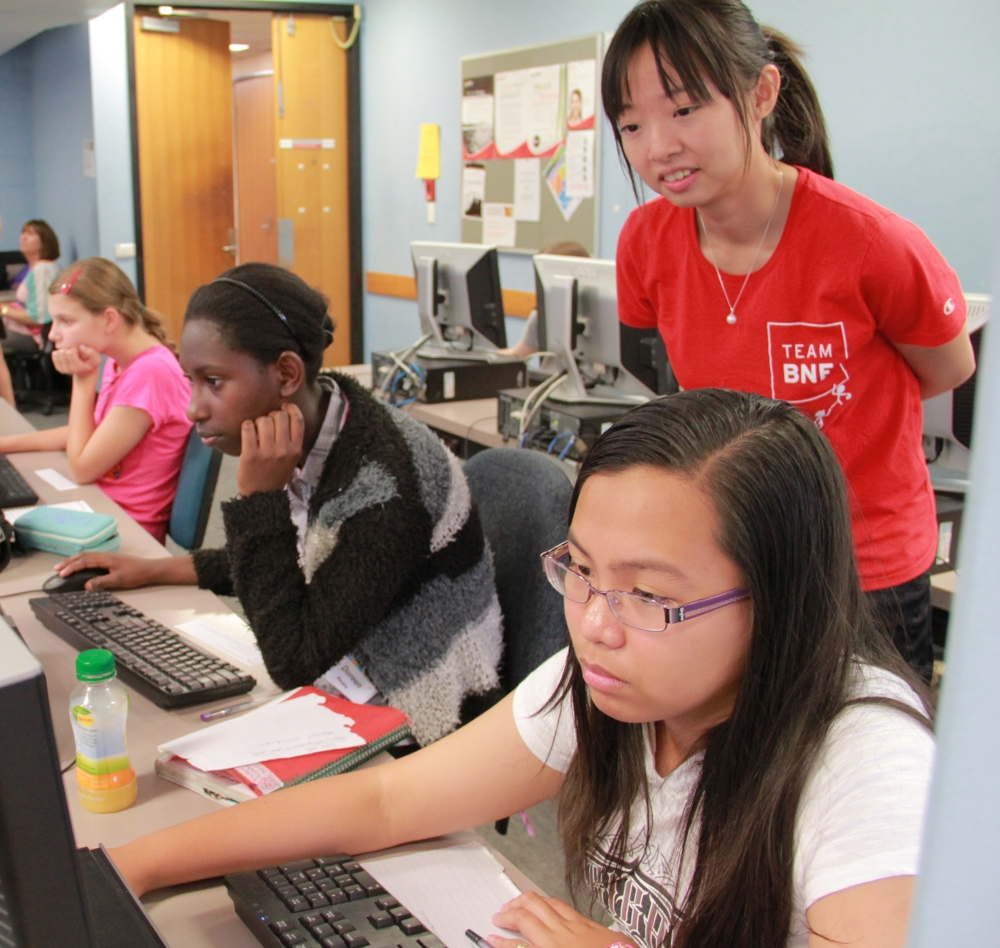
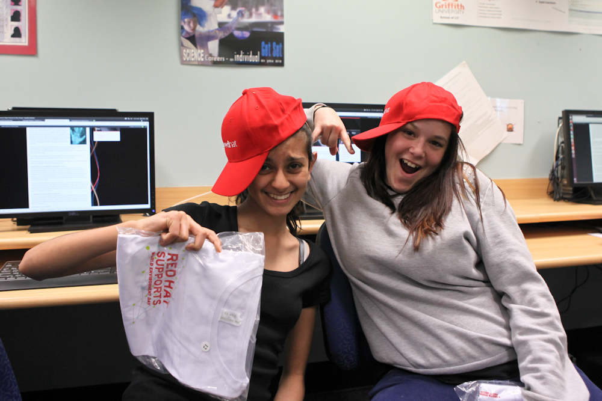

Educating Girls
About FOSS, With FOSS
Katie Miller
@codemiller
Overview
- The problem
- The opportunity
- The approach
- Workshop take 1
- Workshop take 2
- Tips and recommendations

The Problem
- Women make up as little as 2 per cent of the open source community
- Surveys indicate less than 20 per cent of Australian computer science graduates are female
- Less than 25 per cent of the Australian IT workforce is female
- Only 9 per cent of US CIOs are women and that figure has been falling
- Just 15 per cent of ASX 200 board members are women

The Opportunity
- IBM EXITE (EXploring Interests in Technology & Engineering) Camps started in 2001
- The annual camps, held over three days, help fuel interest in science, maths and technology
- The target audience is high-school girls aged from 13 to 16
- Three camps were held in Queensland last year
- Camps mostly consist of workshops, of about one hour each
The Approach
- My workshop: Open Source in the Cloud
- Using Red Hat's PaaS, OpenShift, to create and customise a WordPress site
- Topic areas: open source software, cloud computing, blogging, using the terminal, Linux, passwords, encryption, programming, version control systems
- Web-based workshop instructions, also using WordPress
- Wanted to run workshop on open source OS; lab machines had Ubuntu
Workshop Take 1
- Five sections, each with instructions, a topic write-up and quiz
- First section required setting up an OpenShift account
- Used Login Configurator and WP Survey and Quiz Tool WordPress plugins to necessitate sequential section navigation

What Went Well
- The girls enjoyed experimenting and many showed great creativity
- All students had their first exposure to Linux; some really liked it
- The prizes/free stuff went down a treat
- Web-based instructions could be revisted afterwards; some girls did
- Helpers rock; many hands make light work
Lessons Learnt
- Don't try to include too much content
- Teens won't read chunks of text; more images and pictorial navigation required
- Linux and switching tabs/windows isn't intuitive; tips needed
- Students will follow whatever prompts they see, whether or not they are official instructions
- Not everyone is creative so include example values for everything
Workshop Take 2
- Three sections, each with instructions and screenshots, a slideshow and a quiz
- OpenShift accounts set up for students in advance
- Used Open Clip Art Library and Inkscape for cartoons and other images, DZSlides for HTML5 slideshows and ThumbSniper plugin for screenshots on hover
What Went Well
- Many girls finished and almost all were close to it
- Students were asking questions to better understand the material
- Girls went beyond instructions and did extra customisations
- Web survey gave invaluable feedback
Survey Feedback
- Had you heard of open source before the workshop? Yes: 18% / No: 82%
- Had you heard of Linux before the workshop? Yes: 45% / No: 55%
- Had you ever used Linux before the workshop? Yes: 0% / No: 100%
- How likely is it you will download Linux now that you have learnt about it?
Very likely: 0% / Likely: 73% / Unlikely: 18% / No chance: 9%
- Would you be interested in a coding workshop? Yes: 91% / No: 9%
Survey Comments
- "Learning about different everything in the terminal was interesting."
- "I liked that there was something new to learn...There was also competitiveness that encourages everyone."
- "It seemed as though I was very knowledgable, even though I didn’t really know what I was doing."
- "We got to use terminal, which I think is really fun??? idk I think it’s mostly just the feeling of being a COMPUTER HACKER hahahahh"
Lessons Learnt
- There's a delicate balance between minimising content and including enough to be informative
- Make everything as foolproof as possible
- Students will probably always have issues that you didn't anticipate, so be prepared to deal with them
Tips and Recommendations
- Communicate information through images as much as possible
- Make the content interactive and allow for creativity
- Do a dry run with someone from your target audience; it's easy to skip over steps that seem obvious to you
- Make it fun and consider making it competitive; make sure students are motivated to move forward
- Expect the unexpected and have plenty of folks on hand to answer questions
Links
Credits
- Workshop Photos: Dayle Parker and David Ryan
- Workshop Volunteers: Brian Moss, Julie Wu, Charmaine Bernal, Dayle Parker and David Ryan
Questions?
